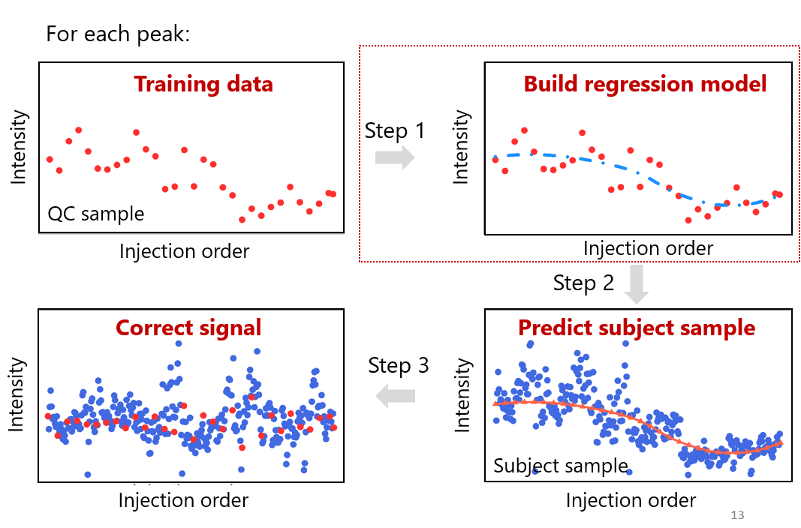
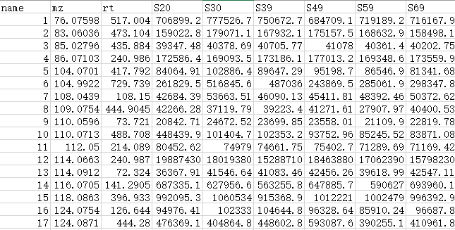
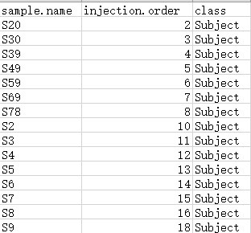
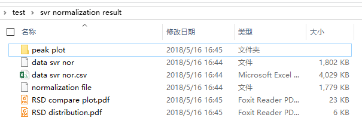

基于质谱的代谢组学数据由于各种因素，比如质谱信号漂移，色谱柱污染，等等，会导致采集的数据有很多的系统误差存在，这些系统误差如果不去除掉，会严重影响数据质量，并进而影响从数据中挖掘有效信息的能力。比如下面图就分别显示了批次内（intra-batch）以及批次间（inter-batch）的系统误差，可以看到系统误差还是非常严重和明显的。因此对于质谱代谢组学数据来说，数据的标准化（data normalization）是必不可少的一步。
代谢组学数据进行标准化的方法大致可以分为三种。


我再读博期间的第一个项目就是建立一个基于QC样品的数据标准化方法，我们最后选择了一个非常有用并且常用的机器学习方法，SVR（支持向量机回归），最后的方法我们做成了一个R包，MetNormalizer。具体的内容可以参考我的文章，Normalization and Integration of Large-Scale Metabolomics Data Using Support Vector Regression。下面就用MetNormalizer自带的示例数据示范如何使用。
if(!require(devtools)){
install.packages("devtools")
}
devtools::install_github("jaspershen/MetNormalizer")
#首先加载MetNormalizer包
library(MetNormalizer)
#设置工作路径
setwd("F:/test")#根据自己实际情况设置路径
data(DemoData, package = "MetNormalizer")
#输出数据为csv格式
write.csv(data, "data.csv", row.names = FALSE)
write.csv(sample.info, "sample.info.csv", row.names = FALSE)
其中data为MS1 peak table，可以来源于任何的处理软件，如XCMS，MS-DIAL等。注意前三列必须为name(峰的名字)，m/z和RT。然后其他列为样本的intensity。

sample.info为样品信息，用来提供样品的信息。一共三列，第一列sample.name(样品名字)，然后依次是injection.order和class。class用来指明样品的种类，”Subject”说明该样品为生物样品，注意S要大写；QC是指样品为QC样品。

MetNormalizer(minfrac.qc = 0,
minfrac.sample = 0,
threads = 3,
peakplot = TRUE)
最后所有的处理结果都存放在svr normalization result文件夹中。
